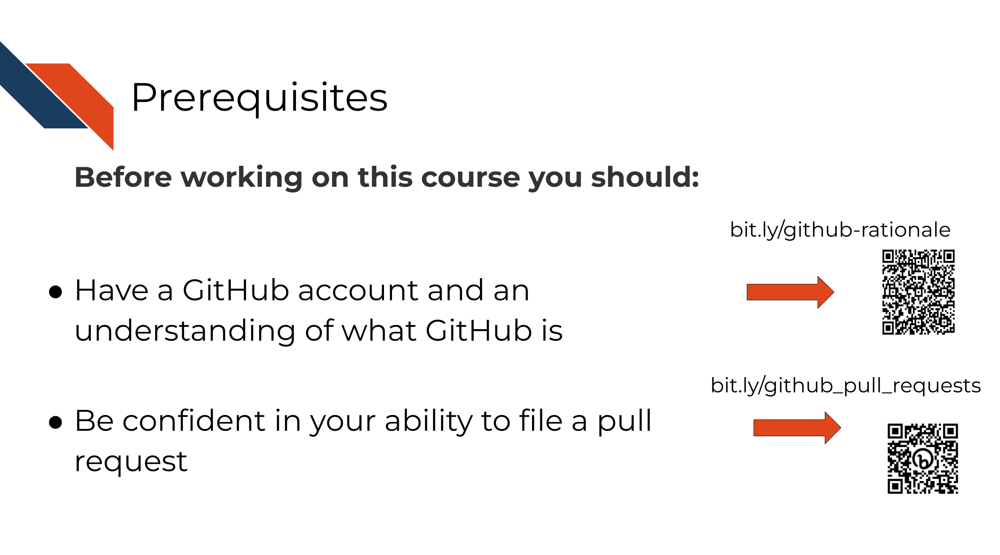

GitHub Automation for Scientists
This course walks through why’s and the how’s for using automation to boost scientific software development process.
This course was launched Nov 2023.
Our courses are open-source and all materials used to create the course are available here: https://github.com/fhdsl/GitHub_Automation_for_Scientists
Necessary Pre-Requisites
There are required prerequisites for this course!

Please check out our Introduction
to Reproducibility Course and our Advanced
Reproducibility Course.
The Containers for Scientists Course may also be useful.
The Containers for Scientists Course may also be useful.
Intended Audience
Concepts Discussed

Learning Objectives
This work was funded by: